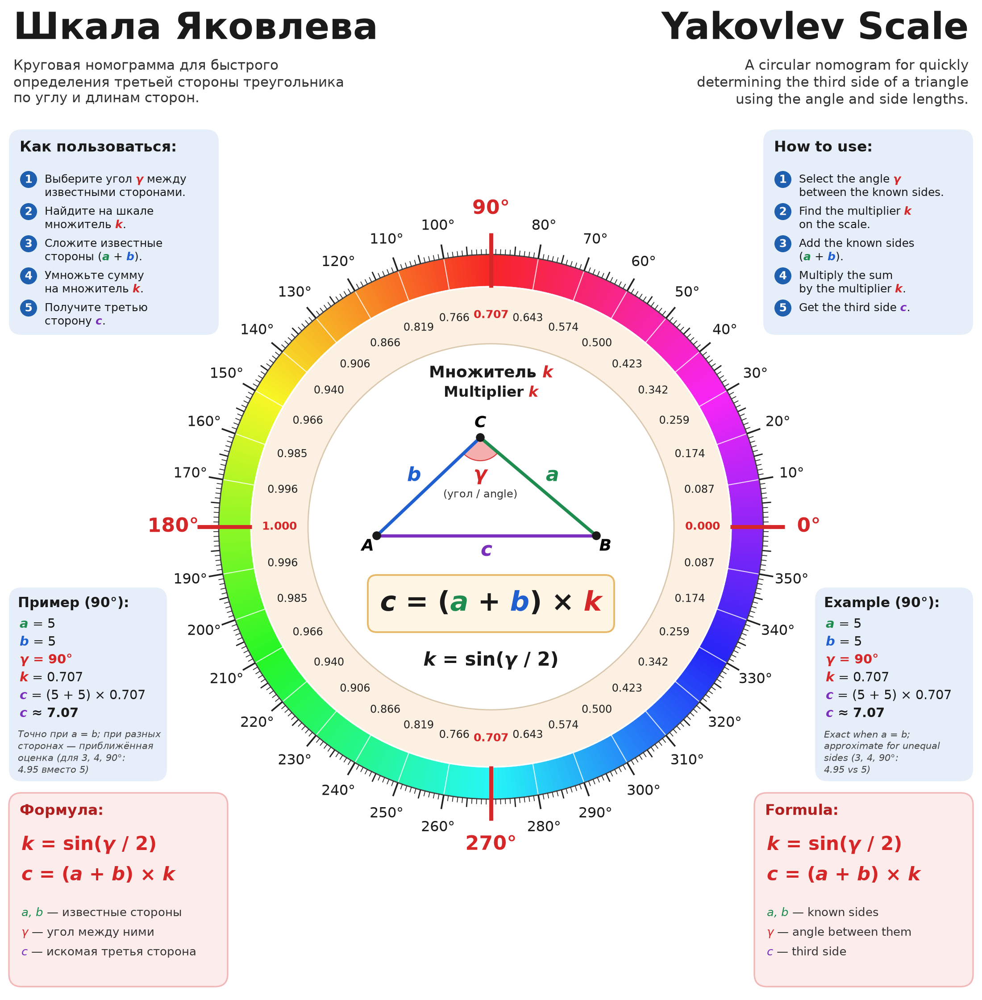
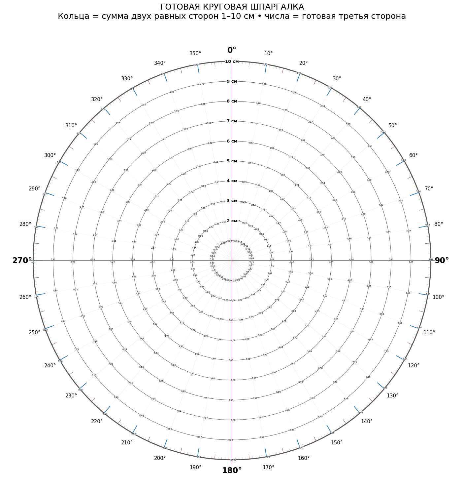

Шкала Яковлева — круговая номограмма для быстрого определения третьей стороны треугольника.
Yakovlev Scale is a circular nomogram for quickly determining the third side of a triangle.
Шкала Яковлева — это удобная шпаргалка на основе классической формулы длины хорды: для двух равных сторон a третья сторона равна c = 2a · sin(γ/2). Таблицы хорд известны со времён Птолемея (II век н. э.), а номограммы для треугольников широко применялись до появления калькуляторов. Новое здесь — не математика, а подача: наглядная круговая шкала и готовая таблица, по которым третью сторону можно прикинуть без синусов и корней.
The Yakovlev Scale is a practical cheat sheet based on the classic chord-length formula: for two equal sides a, the third side is c = 2a · sin(γ/2). Chord tables date back to Ptolemy (2nd century AD), and triangle nomograms were widely used before calculators. What is new here is not the mathematics but the presentation: a visual circular scale and a ready-made table for estimating the third side without sines or roots.

По кругу отложены углы от 0° до 360°, и против каждого угла стоит готовый множитель k = sin(γ/2). Найдите угол между известными сторонами, возьмите множитель напротив него, сложите стороны и умножьте сумму на множитель. Получится третья сторона: c = (a + b) × k. Синусы и корни считать не нужно, хватит одного сложения и одного умножения.
Angles from 0° to 360° run around the circle, and each angle has a ready multiplier k = sin(γ/2). Find the angle between the known sides, take the multiplier opposite it, add the sides and multiply the sum by the multiplier: c = (a + b) × k.
Для равнобедренного треугольника (a = b) результат точный. Если стороны
разные, шкала даёт немного заниженную оценку, и чем сильнее различаются
стороны, тем больше погрешность. При сторонах 3 и 4 и угле 90° шкала даёт
4,95 вместо точных 5, это около 1%.
Exact when a = b. For unequal sides the scale gives a slightly low estimate
(sides 3 and 4 at 90°: 4.95 instead of 5, about 1%).
Пример / Example: a = 5, b = 5, γ = 90°, k = 0,707, c = (5 + 5) × 0,707 ≈ 7,07.

Рабочая таблица по шкале Яковлева, где уже ничего не нужно умножать. Каждое кольцо соответствует сумме двух равных сторон, от 1 до 10 см. Лучи показывают угол между сторонами, от 0° до 360°. На пересечении кольца и луча написана готовая длина третьей стороны. Например, у двух сторон по 5 см (кольцо «10 см») с углом 90° третья сторона равна 7,07 см. Шпаргалка точна для равнобедренных треугольников и удобна, когда нужно быстро найти хорду, раствор циркуля или расстояние между концами двух одинаковых планок под заданным углом.
A ready-to-use table: each ring is the sum of two equal sides (1–10 cm), each ray is the angle between them, and the number at the intersection is the third side. Example: two 5 cm sides (ring “10 cm”) at 90° give 7.07 cm.
Две картинки читаются по-разному, не путайте их.
Пример: угол 120°, кольцо «7 см» → 6,06 (это 7 × 0,866). Это уже третья сторона для суммы 7 см. Для суммы 17 см: 17 × 0,866 ≈ 14,7, или по шпаргалке 6,06 × 17 / 7 ≈ 14,7. Ошибка: умножить 6,06 на 17 (получится 103, это неверно).
Формула точна только при a = b. Если стороны разные, результат немного занижен.
The two pictures are read differently:
Example: 120°, ring “7 cm” → 6.06 (= 7 × 0.866), already the third side for a sum of 7 cm. For a sum of 17 cm: 17 × 0.866 ≈ 14.7, or 6.06 × 17 / 7 ≈ 14.7. Wrong: 6.06 × 17 = 103.
The formula is exact only when a = b; for unequal sides it slightly underestimates.
Автор визуального представления: Владимир Яковлев.
Yakovlev Scale visual representation: Vladimir Yakovlev.
2026